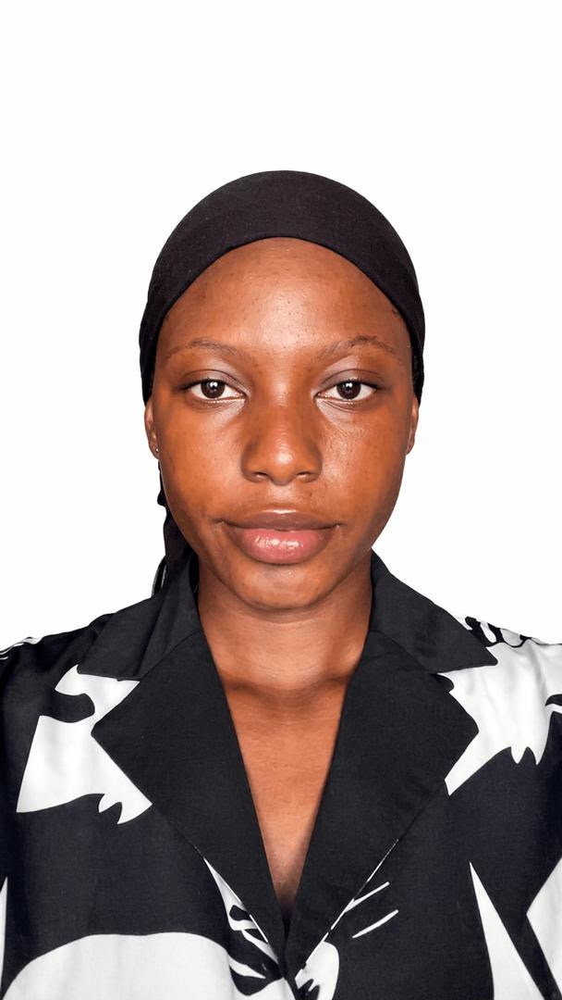
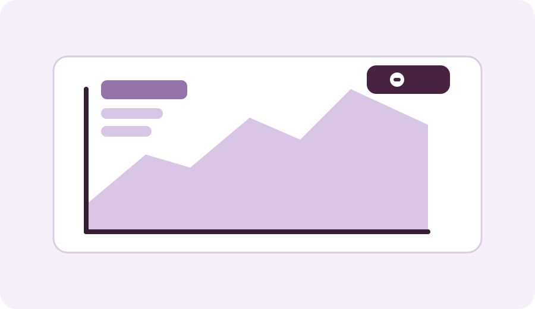

Foundations first.
Mathematics, statistics, computing, and the habits that help me approach unfamiliar problems with care.
Tehillah's Learning Lab — field notes, experiments & progress
I’m Tehillah Samuel, a Data Science student at Miva Open University. I’m building my foundation in mathematics, statistics, programming, and data analysis while developing practical projects that turn what I learn into something useful.
Currently learning

Right now / 01
Welcome
I am a student who is developing the skills needed to understand data, write code, and build practical technology solutions. My academic journey is helping me strengthen my foundation in data analysis, programming, statistics, and logical problem-solving.
I am focused on building real experience through coursework, projects, and continuous learning. I want to become someone who can turn data into insight and use technology to solve meaningful problems in society and business.
Learning Journey
Mathematics, statistics, computing, and the habits that help me approach unfamiliar problems with care.
Coursework and beginner projects, including this portfolio and an academic task planner that keeps its tasks in the browser.
Continue developing my programming, data analysis, and web foundations through study and practical experiments.
Featured Projects

A sample data analysis project designed to explore academic results and identify patterns in performance.
View project details
An interactive planner for students to manage coursework, deadlines, and completed academic tasks.
View project details
A responsive personal website presenting my academic profile, learning journey, and career goals.
View project detailsCareer Goals
I want to build strong analytical and technical skills so I can use data to help organisations make informed decisions, solve real challenges, and create practical digital solutions.